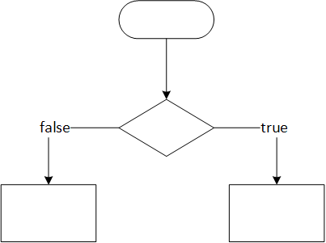

Pengkondisian
Dalam sebuah proses program, biasanya terdapat kode penyeleksian kondisi, kode pengulangan program, atau kode untuk pengambilan keputusan. Hal ini pernah kalian pelajari pada mata kuliah Computational Thinking materi flowchart

Untuk menjalankan perintah tersebut, ada beberapa keyword yang bisa digunakan :
- if - Menjalankan blok kode jika kondisi benar
- else - Menjalankan blok kode jika kondisi salah
- else if - Menentukan kondisi baru jika kondisi pertama salah
- switch - Memiliki lebih banyak opsi yang bisa dijalankan, namun hanya menjalankan yang benar
if
if (conditions){
//blok program yang akan dijalankan
}
if (10 < 20){
cout << "10 lebih kecil dari 20";
}
else
if (conditions){
//blok program yang akan dijalankan
} else { //akan dijalankan ketika tidak terpenuhi }
if (10 > 20){
cout << "10 lebih kecil dari 20";
} else{
cout << "20 lebih besar dari 10";
}
else if
if (conditions){
//blok program yang akan dijalankan
} else if(kondisi_baru){
//akan dijalankan ketika kondisi baru terpenuhi
} else { }
Nested if
Kalian bisa menuliskan if didalam if
if(kondisi 1){
if(kondisi 1_a){
}
}